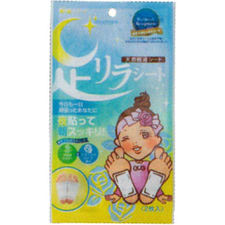

返回列表
产品名称：足リラシート リラックスローズ

中村 足リラシート リラックスローズ ２枚入
メーカー 中村
JANコード 4975729201044
商品の特徴
世界で認められたシート 当社の樹液シートは業界で唯一米国ISO生物学試験所で認められました。 天然樹液シート 今日も一日頑張ったあなたに 夜貼って朝スッキリ！
成分・分量
デキストリン、竹樹液、ドクダミ葉末、ビワ葉末、キトサン、ビタミンC、天然抽出物
用法及び用量
(1)天然樹液シートのプリント面を固定粘着シートの粘着面に貼り合わせます。
(2)(1)のシートを足の裏や気になる部分に貼り付けて固定してください。
※お休み前に貼ると効果的です。